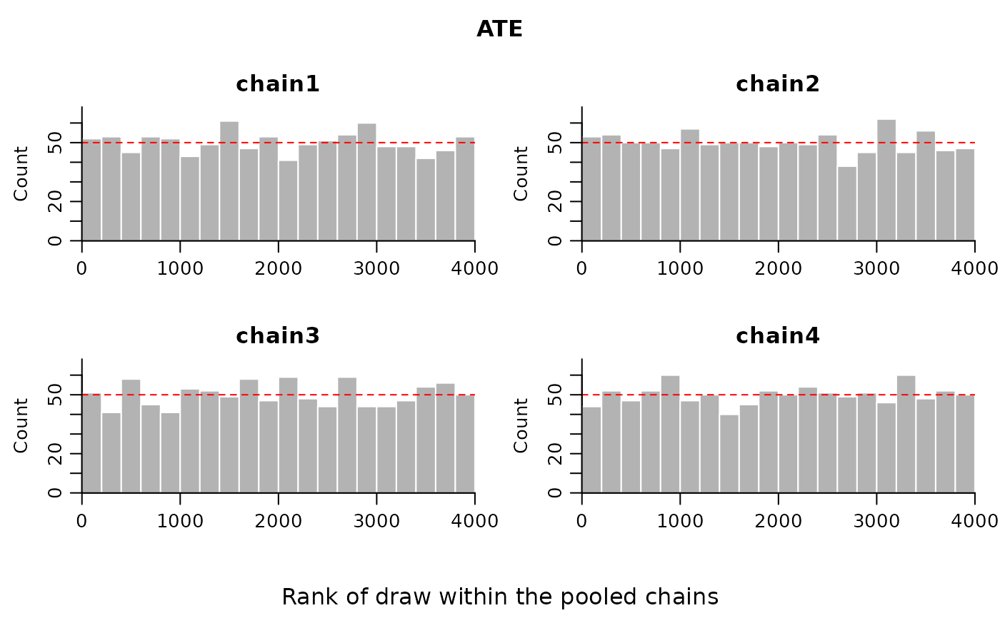
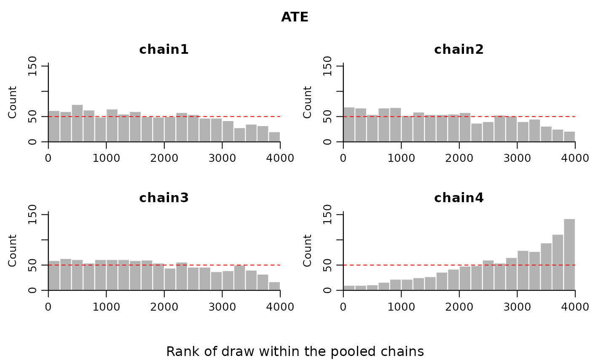

Draws the rank histograms proposed by Vehtari et al. (2021, section 4.5). The draws of one parameter are ranked over all chains pooled together, and the ranks belonging to each chain are then shown as a separate histogram panel on a shared rank axis. If every chain is targeting the same posterior, the ranks within each chain are uniformly spread, so every panel should sit flat along the reference line drawn at the uniform expectation. A chain that has settled in a different location leans towards the low or the high ranks; a chain with a different scale is heaped in the middle or at both ends.
Usage
rank_plot(
draws,
parameter = 1L,
bins = 20L,
plot = TRUE,
main = NULL,
col = "grey70",
border = "white",
ref_col = "red"
)Arguments
- draws
A numeric array of posterior draws with dimensions iterations by chains by parameters. A matrix of iterations by chains is accepted as the single parameter case. Chain and parameter names are taken from the second and third
dimnameswhen present.- parameter
The parameter to plot, given either as a name matched against the parameter
dimnamesor as a column index into the third dimension. Defaults to the first parameter.- bins
Number of histogram bins, spread evenly over the rank axis. Defaults to 20.
- plot
Set to FALSE to compute the rank counts without opening or drawing on a graphics device. The return value is unchanged.
- main
Overall title placed above the panels. Defaults to the parameter name.
- col, border
Fill and border colours of the histogram bars.
- ref_col
Colour of the uniform reference line.
Value
Invisibly, a list with components
- counts
A
binsby chains matrix of rank counts, with the chain names as column names.- breaks
The
bins + 1bin boundaries on the rank axis.- expected
The count expected in every cell of
countswhen the chains agree, namely the number of iterations divided bybins.- parameter
The name of the parameter that was plotted.
These are everything needed to redraw the plot, and to test the computation where no graphics device is available.
Details
Rank plots are proposed as a replacement for trace plots, not as a companion to them: unlike trace plots, they "don't tend to squeeze to a fuzzy mess when used with long chains" (Vehtari et al., 2021, section 4.5). Departure from uniformity is judged against a fixed reference height, which does not become harder to read as the chains get longer.
Posterior coupling tilts draws taken from two separate posteriors, one for the outcome model and one for the propensity score model. The doubly robust estimate is only as trustworthy as the worse of the two, so run this on the parameters of both models rather than on the treatment effect alone.
Note that the object returned by the estimators in this package is a set of
posterior draws of a derived quantity, not a set of MCMC chains, and a plot
of it against the iteration index is not a trace plot. This function needs
genuine per-chain draws: run the sampler more than once, from dispersed
starting points, and stack the results into the array described under
draws.
References
Vehtari, A., Gelman, A., Simpson, D., Carpenter, B. and Burkner, P.-C. (2021). Rank-normalization, folding, and localization: an improved R-hat for assessing convergence of MCMC. Bayesian Analysis, 16(2), 667-718. doi:10.1214/20-BA1221
Examples
set.seed(1)
draws <- array(stats::rnorm(4000), dim = c(1000, 4, 1),
dimnames = list(NULL, paste0("chain", 1:4), "ATE"))
# Chains that agree: four flat panels.
rank_plot(draws, "ATE")

# A chain stuck at a different location: its panel tilts, and the other
# three tilt the other way to compensate.
draws[, 4, 1] <- draws[, 4, 1] + 1
rank_plot(draws, "ATE")

# The counts alone, with no drawing at all.
rank_plot(draws, "ATE", plot = FALSE)$counts
#> chain1 chain2 chain3 chain4
#> [1,] 62 69 59 10
#> [2,] 60 67 63 10
#> [3,] 74 54 61 11
#> [4,] 63 67 54 16
#> [5,] 49 68 61 22
#> [6,] 65 52 61 22
#> [7,] 55 59 61 25
#> [8,] 60 54 59 27
#> [9,] 50 54 60 36
#> [10,] 49 55 54 42
#> [11,] 50 58 44 48
#> [12,] 58 37 56 49
#> [13,] 54 40 46 60
#> [14,] 47 53 46 54
#> [15,] 47 51 37 65
#> [16,] 42 40 39 79
#> [17,] 28 45 50 77
#> [18,] 35 31 40 94
#> [19,] 32 25 32 111
#> [20,] 20 21 17 142